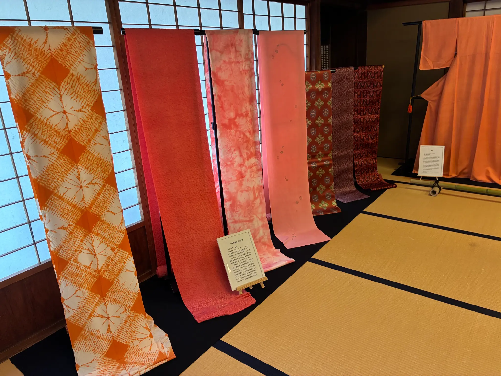

失われた歴史

2000年の歴史を持つ日本最古の染料「日本茜」。その赤は、千年の時を経ても色褪せないほど美しく、古代日本では高貴な身分を象徴する特別な色として大切にされていました。しかし、のちに染めやすい別の染料が登場したことで、手間のかかる日本茜は歴史から姿を消してしまいます。今では市場に流通することもなくなり、野生のものは雑草として扱われるほどの幻の存在となっていました。
紡がれる夕焼け色

失われた色を蘇らせる道のりは、まさに困難の連続。栽培は温度管理が極めて難しく、染色技法を記した文献もほとんど残っていません。なにより、日本茜には赤と黄色の色素が含まれており、理想の美しい色合いに染め上げる工程は至難の業でした。手法が確立されていないゼロの状態から、途方もない試行錯誤を繰り返す日々。それでも諦めない作り手のひたむきな想いが、幻の色を再び現代に引き戻しました。
身に纏う作り手の思い

丹念に染め上げられるのは、どこか優しく温かい朝焼けや夕焼けのような色合い。自然と向き合う繊細な手作業からしか生まれないこの色は、見る人の心を穏やかにしてくれます。2000年前から大切にされてきた色を、現代の日常のなかで身に纏う。途絶えかけた日本の美しい伝統は、人々の暮らしに寄り添いながら未来へと受け継がれていきます。